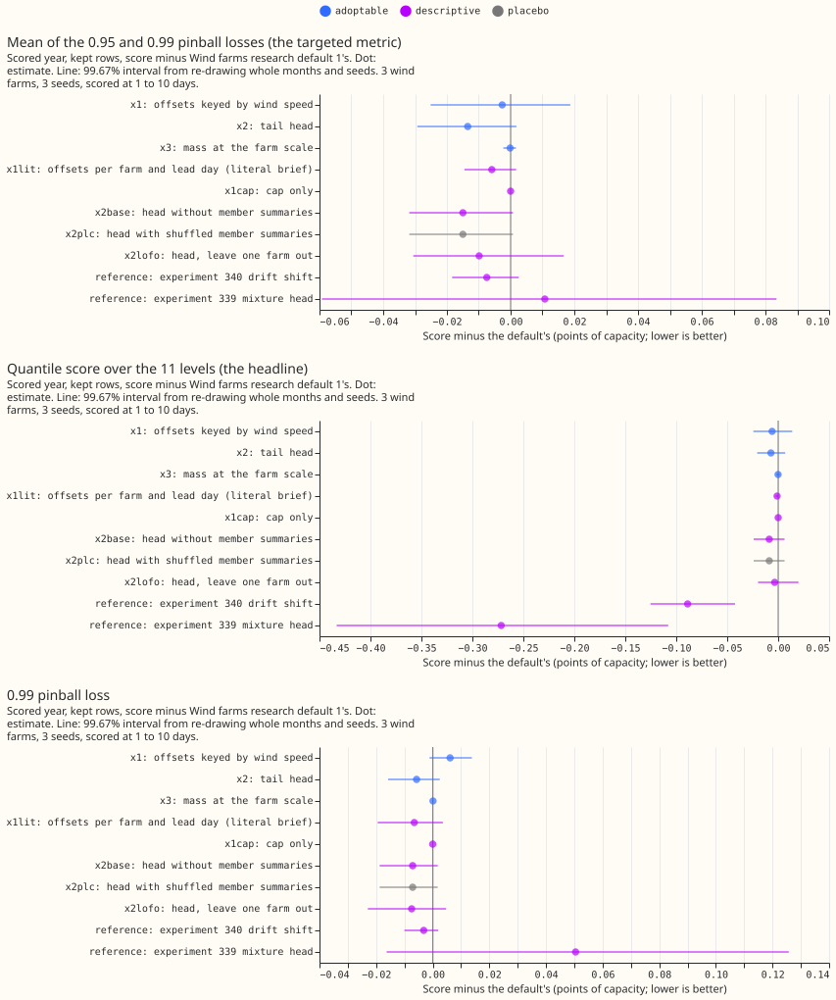
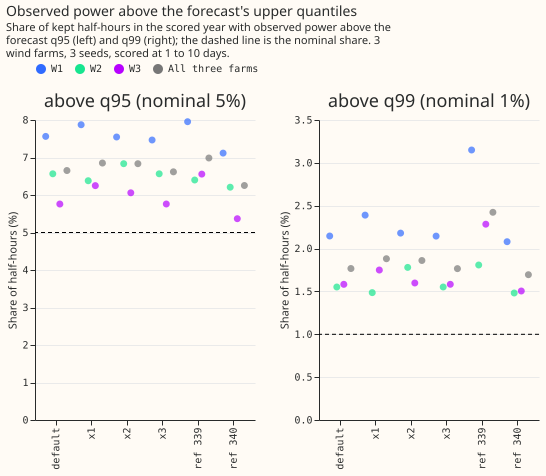
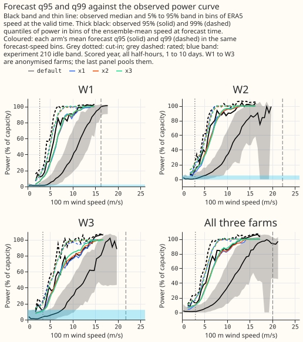
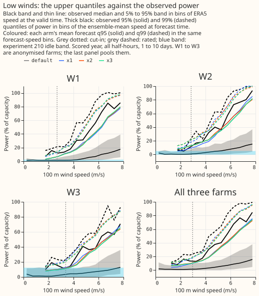
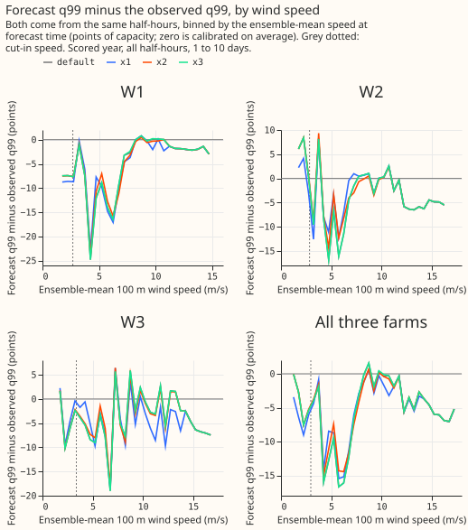

Can the upper quantiles of Wind farms research default 1 be made to cover the observed power, and does an ensemble-aware correction beat a plain recalibration?
Take-home: corrections fitted on past forecasts do not fix the wind forecast's upper tail, and the
ensemble members add no information beyond the forecast's own quantiles. The wind forecast (Wind
farms research default 1, the forecast scored in
experiment 340) sets
its 99% quantile (q99) too low: observed power exceeds it in 1.8% of the scored half-hours, where 1%
is intended. The forecast is also capped: no quantile exceeds the 99.9th percentile of the farm's
observed power in the hindcast, and the arms below leave that cap in place. We tried three
corrections for the upper quantiles, all fitted on the daily hindcast runs (the 442 daily runs up to
2025-06-16: forecasts made retrospectively on earlier days). The default already contains an offset
table, which adds a fitted offset to every quantile for each farm and lead day. An offset table
keyed by wind speed (x1) changed the 0.99 pinball loss by +1.0%. A boosted-tree head (x2), in the
manner of the tail head of experiment 284,
lowered it by 0.9%. A probability mass at the cap, set by the share of ensemble members above the
farm's rated speed (the speed above which its power stops rising; x3), changed it by 0.0%. The share
of observed power above q99 stayed at 1.8% to 1.9% in the three arms. The head without any ensemble
input gained as much as the head with it. The verdict is not supported, and nothing is adopted.
A pinball loss is the quantile-forecast loss at one level. Pinball losses and scores are in points of capacity (a point is 1% of a farm's capacity; lower is better) on the kept rows, the half-hours that the idle-band mask of experiment 210 does not flag. The three metered wind farms are anonymised as W1 to W3, and the lead range is 1 to 10 days. Differences are the arm's score minus the default's, so a negative difference is an improvement. The arms add to the default, so "x2" below means the default plus the head, and "targeted" means the mean of the 0.95 and 0.99 pinball losses.





Design
- Plan. Committed before any score, in the first commit of this branch. Changes after the first run, all recorded here: (1) the plan's cap, taken from the rows with ERA5 wind at or above the rated speed, lowered W3's forecasts to 53% of capacity and raised every arm's score by 0.2 to 0.9 points. The cap in the arms is now the 99.9th percentile of each farm's observed hindcast power (for the replicate, of the hindcast before 2025). The plan's cap remains as the descriptive arm x1capstrong. (2) The plan's speed-bin edges (0, 5, 8, 11, and 14 m/s) became six bins with an edge added at 17 m/s, because W1's rated speed is 16.25 m/s. (3) The plan's x1lit was described as "the default plus the cap"; the code's x1lit is the farm-and-lead-day offset table plus the cap, and x1cap is the cap alone. (4) x3's constant is fitted on the pinball losses at q90, q95, and q99. (5) Condition 2 also checks the 0.99 pinball loss against 0.05, as the plan's metric line states. The code review in Review led to two further fixes before the numbers on this page were produced.
- Family and default. Default plus x against Wind farms research default 1, 3 farms, 3 seeds (the default's; the head's five seeds are a separate check), 107,121 scored half-hours. Code reused from the folder of experiment 340, and through it 336, 326, 303, 285, 259, and 230. All arms are tier 2. The default is reproduced exactly (difference 0.000 from experiment 303's P1, 11.352 on the kept rows).
- Arms. x1: offsets for q90, q95, and q99 per farm, lead day, and ensemble-mean speed bin, fitted on the default's hindcast quantiles, plus the cap. x2: one tree model (depth 3, 150 rounds) per level at q90, q95, and q99, fed the default's 11 quantiles, the members' speed mean, standard deviation, and share above the rated speed, the lead, and the farm. x3: a mass at the cap with weight lambda times the share of members above the rated speed (the speed at which the farm's ERA5 power curve reaches 95% of its maximum: 16.25 m/s at W1, 22.25 m/s at W2, 21.75 m/s at W3); lambda per farm is 0.25 at W1 and 0.00 at W2 and W3. Descriptive: x1lit, x1cap, x1capstrong, x2base (no member summaries), x2plc (member summaries from another case of the same farm and lead day), x2lofo (trained on two farms), and the references of experiments 340 (drift shift) and 339 (mixture head, its arm x1).
- Controls. Known-answer test: the speed-keyed fit recovers an injected +3.0 point offset at speeds from 8 m/s as +2.99 and at lower speeds as +0.03. Leakage: the hindcast ends on 2025-06-16 and the scored year starts on 2025-07-01; the replicate's fits stop on 2024-12-31. The shuffled placebo (x2plc) is identical to x2base to the last digit, because the trees never split on shuffled summaries. The placebo therefore keeps 111% of x2's gain, which fails the plan's placebo condition; the reading is that x2's gain is recalibration, not information.
Results
| Arm | Kept rows | All half-hours | Below cut-in | Idle rows | Days 1 to 2 | Days 3 to 10 | Targeted | 0.95 pinball | 0.99 pinball |
|---|---|---|---|---|---|---|---|---|---|
| Default | 11.352 | 10.825 | 5.374 | 6.051 | 6.612 | 11.759 | 1.625 | 2.610 | 0.640 |
| x1 | 11.346 | 10.821 | 5.389 | 6.057 | 6.605 | 11.755 | 1.622 | 2.599 | 0.646 |
| x2 | 11.345 | 10.819 | 5.378 | 6.048 | 6.607 | 11.752 | 1.612 | 2.589 | 0.634 |
| x3 | 11.352 | 10.825 | 5.375 | 6.052 | 6.612 | 11.759 | 1.625 | 2.610 | 0.640 |
| x1lit | 11.351 | 10.825 | 5.376 | 6.053 | 6.612 | 11.758 | 1.619 | 2.605 | 0.634 |
| x2base | 11.343 | 10.817 | 5.381 | 6.050 | 6.604 | 11.751 | 1.610 | 2.587 | 0.633 |
| x2plc | 11.343 | 10.817 | 5.381 | 6.050 | 6.604 | 11.751 | 1.610 | 2.587 | 0.633 |
| x2lofo | 11.349 | 10.823 | 5.382 | 6.054 | 6.615 | 11.755 | 1.615 | 2.598 | 0.633 |
| x1capstrong | 11.560 | 11.006 | 5.331 | 5.981 | 7.024 | 11.896 | 2.350 | 3.149 | 1.551 |
| Reference: 340 drift shift | 11.263 | 10.792 | 5.884 | 6.517 | 6.621 | 11.718 | 1.618 | 2.598 | 0.637 |
| Reference: 339 mixture head | 11.080 | 10.789 | 7.606 | 8.146 | 6.472 | 11.763 | 1.636 | 2.581 | 0.691 |
The first six score columns are the quantile score over 11 levels; "Targeted" is the mean of the 0.95 and 0.99 pinball losses. The frozen XGBoost reference scores 11.697 on the kept rows (targeted 1.706, share above q99 2.4%), climatology 13.547, and persistence 15.566 (hours 0 to 6 only, 1,696 rows).
- Contrasts on the targeted metric (99.67% month-block intervals). x1 -0.003 (-0.025 to +0.019), x2 -0.013 (-0.029 to +0.002), x3 -0.000 (-0.002 to +0.002). None excludes zero, so no arm passes condition 1 (x2 would also need 0.03). x2 minus x2base is +0.002 (-0.0004 to +0.004). Five seeds of the x2 head's own fit give a targeted metric of 1.6113 to 1.6116 (spread 0.0003).
- The offsets keyed by farm and lead day alone (x1lit) do more than the plan expected. They lower the share above q99 to 1.62% and the 0.99 pinball loss by 1.0% (-0.019 to +0.004), more than x1, which adds the wind-speed key. The cap alone changes nothing (x1cap), so the effect is the offsets, which refit the quantiles of the default's own table on the table's output. The interval includes zero, and x1lit cannot be adopted (the plan reserves adoption for x1 to x3).
- Predictions that could fail. x1 lowers the share above q99 from 1.8% to under 1.5%: failed (1.9%). x1 lowers the 0.99 pinball loss by at least 3%: failed (+1.0%). x2 lowers it by at least 10%: failed (-0.9%). The base-only head gains at least half as much as x2: held, but trivially, because it gains 111% as much. x3 matters at W1 and W2 only: failed (no effect at any farm; lambda is 0 at W2 and W3). No arm moves the headline by more than 0.05: held (largest -0.009 excluding x1capstrong). The share above q99 stays above 1% for every arm: held.
- Tails (kept rows, scored year). Share of observed power below q01 0.51%, below q05 1.29%, above q95 6.65%, above q99 1.77% for the default; x1 6.86% and 1.88%; x2 6.83% and 1.86%; x3 6.62% and 1.77%. The 0.01 and 0.05 pinball losses are 0.284 and 1.356 for every arm, and the 5% to 95% band covers 92.1% for the default and 91.9% for x1 and x2. Per farm the default's share above q99 is 2.15% (W1), 1.55% (W2), and 1.58% (W3).
- Replicate (2025-01 to 2025-06, fits before 2025). The targeted contrasts are x1 -0.002, x2 -0.007, and x3 +0.002 (x3 is worse); the default's share above q99 is 1.82% there as well. The t test on the six monthly differences contradicts x3 (p = 0.014, x3 worse).
- Adoption. x1 fails condition 1 (interval includes zero). x2 fails conditions 1 and 4 (the placebo keeps 111% of its gain). x3 fails conditions 1 and 3. Conditions 2 and 5 hold for all three, including the maintainer's low-wind condition (largest upper bound +0.030 on the rows below cut-in).
- Why the shortfall does not go away. On the hindcast fit rows (2019 to 2024) the default's share above q99 is 1.5% at W1, 1.2% at W2, and 1.0% at W3, and on the hindcast months of 2025 it is 1.6%, 2.0%, and 1.1%; on the scored year it is 2.1%, 1.5%, and 1.6%. The offset table is fitted on those rows, and its coverage worsens on later rows. A second correction fitted on the same rows cannot see that change, and one scored year cannot confirm that drift is the cause. A q99 shift fitted on the scored year itself (oracle, never adopted) is +3.0, +3.6, and +3.8 points at W1, W2, and W3 and lowers the 0.99 pinball loss only from 0.645, 0.639, and 0.635 to 0.629, 0.629, and 0.624.
- Power curves. In figures 3 and 4 the forecast q99 sits roughly 10 to 30 points of capacity below the observed q99 between about 2 and 7 m/s of ensemble-mean speed, and meets it above 8 m/s. The differences among the arms are under 3 points everywhere. Observed power at W2 and W3 does not saturate within the range of speeds the ensemble forecasts, so the rated speed (22 m/s at W2 and W3) says little about the top of the distribution.
- Standard architecture. The nearest arm to physics core, input adapter, and tail head is experiment 339's mixture head on the adapter's quantiles (reference row). Experiment 339's mixture head is the best family on the headline (11.080, -0.272, or 2.4%, against the default) and worse than the default on the upper tail: targeted +0.011 (+0.7%), 0.99 pinball +0.051 (+8%), share above q99 2.4%. Its gap to the best arm on the targeted metric (x2base, 1.610) is +0.026 points (+1.6%).
- Curtailment cost. Not scored: the metric of experiment 277 scores a supply point with its generators, and the three farms are not one.
Checks
- Median minus mean forecast, kept rows. Default -4.805 points, x1 -4.663, x2 -4.687, x3 -4.822, x1lit -4.823, x2base -4.668. Raising the upper quantiles raises the mean forecast by 0.1 points.
- Error of the mean forecast beside the targeted contrast. The mean forecast's absolute error changes by x1 -0.015, x2 -0.005, and x3 +0.001 points, in the same direction as the targeted contrast for x1 and x2. The median's absolute error changes by -0.002 (x1), +0.001 (x2), and 0.000 (x3). Trigger 3 did not fire.
- Leaving one farm out. x1's targeted contrast is +0.014 at W1 alone and -0.018 at W2 alone, so its sign depends on the farm; without W1 it is -0.012. x2 is negative at each farm alone (-0.005, -0.021, -0.015). The leave-one-farm-out trigger fired for x1 (the sign flips, but the interval includes zero at every cut).
- Audit triggers fired (the
ml-experimentskill's "Audit before merge" list). Four of the seven fired: a failed control (the shuffled placebo keeps 111% of x2's gain), a result that contradicts its own prediction (x1 and x2 gained nothing against predicted gains of 3% and 10%), the leave-one-farm-out flip (x1), and a nested arm that beats the arm containing it (x2base scores 0.002 better than x2, and x2plc equals x2base). The first, second, and fourth are explained by the tests above: the gain is recalibration, and the in-sample versus scored-year shares show the shortfall is consistent with drift. The mean-forecast trigger did not fire. A Sonnet audit re-derived the contrasts from the stored quantiles; see Review.
Caveats
- Scored at 1 to 10 days, 3 farms, 12 months. Intervals do not cover other farms, and the scored year is one year of drift.
- x2's gain is a recalibration fitted on in-sample quantiles. The training base is the default's quantile after a table fitted on the same rows, and the scored base is out of sample. A head trained on out-of-sample bases, for example from a rolling refit of the table, is untested.
- The observed curves in figures 3 and 4 combine two binnings: the band uses ERA5 speed at the valid time, and the thick lines and coloured lines use the ensemble-mean speed at forecast time.
Review
- Code review (Sonnet, one agent). Accepted: the replicate's cap read months from 2025 (fixed with a cap from hindcast before 2025); the leakage check did not cover the replicate (now it records the latest replicate fit time, which is 2024-12-31); no alignment check of the replicate cases (added); the 0.99 pinball tolerance was not checked (added); the placebo share is only read when x2's gain is positive (added). Plan and code differences are listed in Design. Rejected: a "no unresolved audit trigger" clause in code (read by hand above).
- Audit (Sonnet, one agent). It re-derived the pinball losses, the shares above q95 and q99, and the targeted contrasts with its own code from the stored quantiles, and every number on this page matched, including the month-block intervals to within 0.0003. It found no unsorted, out-of-range, or missing quantile in any arm. It confirmed that the head returns the base quantile plus a tree offset, and that x2plc equals x2base because the placebo head never splits on a shuffled column (the full head puts 55%, 21%, and 12% of its gain at q90, q95, and q99 on the member columns). Finding accepted: x1lit lowers the share above q99 to 1.62% and the 0.99 pinball loss by 1.0%, which is more than x1 and contradicts the plan's expectation that it reproduces the default; the cap alone (x1cap) changes nothing, so the effect is the offsets, and the page now says so. Its interval (-0.019 to +0.004 on the 0.99 pinball loss) includes zero.
- Prose review (Sonnet, one agent). Accepted: define the cap, the rated speed, the targeted metric, and the pinball loss in the opening; name the audit triggers in words; fix "first seven" to "first six" columns; scope the law-like sentences and replace the money metaphor; split the Design bullet; replace the stale placeholder. Rejected: moving the whole definitions paragraph above the take-home (the lead states the conclusion first, as the prose rules require); linking the research-default page for every phrase of the plan's front matter (the plan is kept as committed).
What to try next
- Refit the offset table on the most recent months (for example monthly, on a rolling window) before building any further upper-tail head, because the miss is drift. This is a small change to the table the default already has.
- A neural component is not indicated by this result. The head with member summaries did no better than the head without them, so at these 3 farms in the scored year a neural input adapter or mixture head has no additional information about the upper tail to exploit.